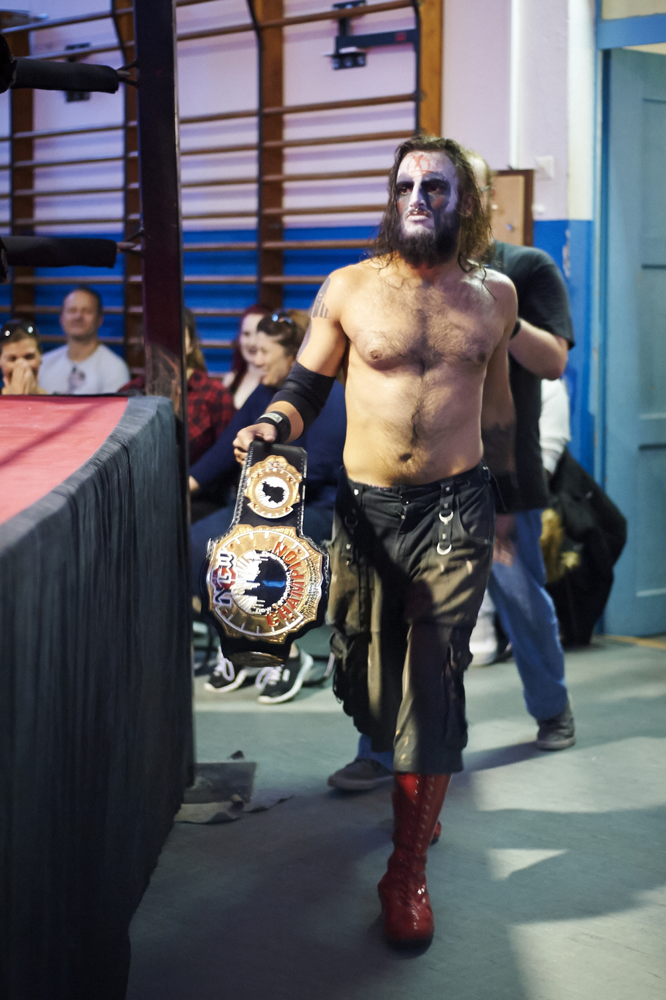
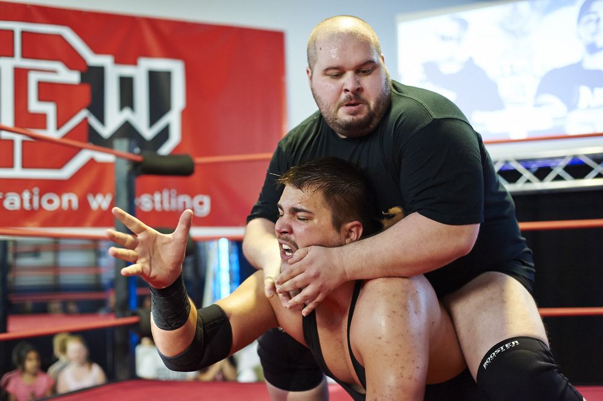
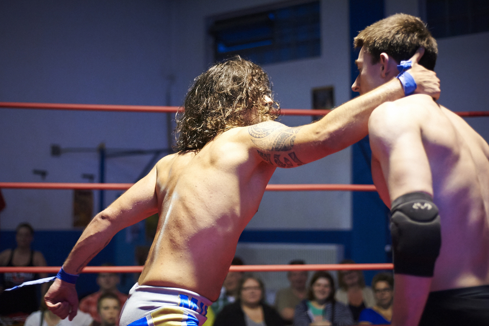
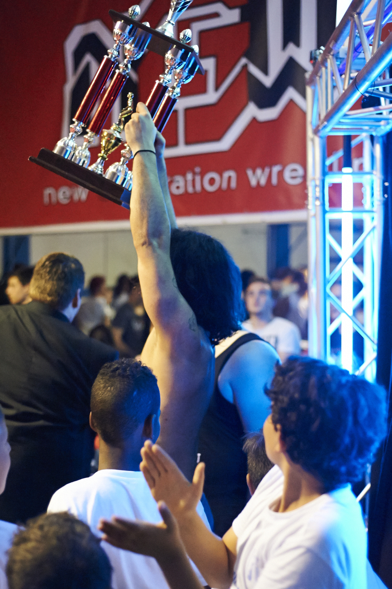

Gastautor*In .
Schreibt über: #GastautorIn #Gesellschaft #halloFFM
Ein Abend bei der nGw. Von Dennis Fassing
Dennis Fassing von den footnoters.de ist großer Wrestlingfan. Wie einige andere aus unserer Redaktion verpasst er keine WWE-Großveranstaltung. Zuletzt wurde er jedoch darauf aufmerksam, dass es auch bei uns in Frankfurt eine eigene Liga gibt. Grund genug, diese mal genauer unter die Lupe zu nehmen.
Betritt man am Abend des 04. Juni das Gelände der Sportgemeinschaft Frankfurt-Sossenheim, macht die Anlage einen friedlichen Eindruck. Leute essen Eis und Fritten an den Tischen vor der Vereinskneipe, die E-Junioren haben gerade ein Fussball-Turnier beendet. Erst wenn man sich bis in die Sporthalle vorgearbeitet hat, merkt man, dass es heute noch handgreiflich werden wird: Wrestling ist angesagt, genauer, der „Fate of Eight Cup 2016“ der new Generation wrestling! Der Ring ist das Prunkstück im Zentrum der Halle, darum herum sind die für diese Sportart typischen ‚Steel Chairs‘ aufgestellt. Es wird voll an diesem Abend, immer mehr Stühle werden herangeschafft. Für maximal 10€ (ermäßigt bis 6€) sieht man an diesem Abend stolze neun Matches, dazu mehrere Promos und Videos. Das Turnier enthält vier Viertelfinals, zwei Halbfinals und das große Finale, zusätzlich werden zwei Titel ausgekämpft, darunter die vom Wrestler Maggot gehaltene nGw-Championship, auf deren Plakette eine erstklassige Frankfurter Skyline glänzt.

nGw-Wrestling, dass wird mir schnell klar, ist eine Indy-Promotion auf hohem Niveau, viele Akteure sind bereits seit Jahren dabei und dementsprechend erfahren sowohl im Ring als auch außerhalb. Gleich im ersten Match bezeichnet mich Carsten Crank, ein Hüne aus Hammersbach, im Vorbeilaufen als Lappen. Verglichen mit seinem Körperbau muss ich mir das absolut verdient gefallen lassen. Crank, dies ist Sekunden nach seinem Entrance klar, ist Heel, ein ‚böser‘ Wrestler, der die negativen Reaktionen der Fans anstacheln soll, um so die ‚Faces‘, die guten Jungs, noch besser aussehen zu lassen. Der gute Junge ist in diesem Match Timo Theiss, seinem Gegner körperlich unterlegen, aber mit absoluten Nehmerqualitäten. Nachdem er auch nach der dritten heftigen Attacke nicht liegen bleibt, feuert ihn das Publikum geschlossen an und brüllt ihn wieder hoch. Am Ende verliert er dennoch, Crank zieht in die nächste Runde des Turniers ein. Buhrufe der Crowd bringen Joey Sensation, den Promoter der nGw, in den Ring: Theiss wird eine zweite Chance bekommen, er ersetzt in einem weiteren Viertelfinale einen verletzten Wrestler.

Man erkennt schnell, dass bei ngw-Wrestling nicht nur Match nach Match abgespult wird. Die Wrestler haben gut ausgearbeitete Persönlichkeiten, viele Kämpfe sind mit kleinen Geschichten in- und außerhalb des Rings gewürzt. Theiss gewinnt sein zweites Match, verliert dann aber sein Halbfinale gegen Max Million, einen Athleten, der in einer Boyband-Gruppierung mit seinem Kumpel Michael Noel zum Ring kommt, aus den Boxen dröhnt dazu feinste 90er Boyband-Dance-Musik. Sowohl Theiss als auch Max Million sind Faces, vor dem Match kreisen beide die Hüften zum Song, danach gibt es einen respektvollen Handschlag. Als Million dann im Finale zum dritten Mal die Halle betritt, hat sich die 90er-Mukke bereits als Ohrwurm bei jeder Person festgesetzt, man kapituliert, singt und tanzt mit. Das letzte Match des Abends geht gegen Lukas Damon, einen schnöseligen und schmächtig wirkenden Schlacks, der im Laufe des Kampfes aber mit agilen und schnellen Aktionen eine große Gefahr darstellt. Das Finale bietet feinstes Wrestling und viele Wendungen, mal hat Million die Oberhand, dann wieder Damon, Nearfall folgt auf Nearfall. Am Ende triumphiert der Gute mit letzter Kraft, Max Million pinnt seinen Gegner, der Referee zählt durch bis drei. Die Halle tobt, Standing Ovations, alle Face-Wrestler des Abends stürmen in den Ring und feiern den Turniersieger.
 
Der „Fate of Eight Cup“ von nGw-Wrestling entpuppte sich als feines lokales Wrestlingevent auf hohem technischen Niveau. An dem Abend kamen sowohl Wrestlingfans und -kenner aber auch Neugierige und Laien auf ihre Kosten, wie die gute Stimmung im bunt durchmischten Publikum zeigte. Wer die Jungs und Mädels beim nächsten Mal auch live erleben möchte, hat dazu die Chance am 10. September, wenn in der SGS-Sossenheim die Pforten erneut zum Spätsommer-Event „Global Warming“ geöffnet werden. In der Zwischenzeit kann man regelmäßig an Sonntagen ab 14 Uhr beim öffentlichen Training Wrestling-Luft schnuppern, hierzu muss man aber 16 Jahre alt sein (und in einer halbwegs ordentlichen körperlichen Verfassung sein, wenn man sich an den darauffolgenden Tagen noch bewegen können möchte).
Wer jetzt Interesse hat, schaut auf der Homepage der Promotion nach Infos zu den Veranstaltungen und dem Training.
Copyright Bilder: Vielen Dank an Volker Muth.

Schreibt über: #GastautorIn #Gesellschaft #halloFFM
Ersten Kommentar schreiben